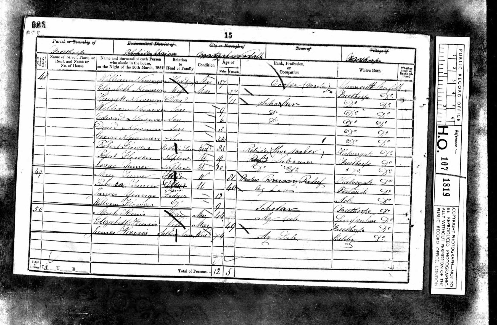

Elizabeth Flower b. 1814
Peter's 3× great-grandmother by adoption.
Elizabeth Flower was born on 27 Feb 1814 in Freethorpe, England, United Kingdom (according to an online family tree)1. She has died (according to an online family tree)1, but the date of death is not yet documented.
Family
- Partner
- William Robert Newman 1813–1890
- Children
- Edward Newman 1844–1909 tradition
Life events
| Event | Date | Place and details |
|---|---|---|
| Born | 27 Feb 1814 | Freethorpe, England, United Kingdom According to an online family tree1 |
| Baptised | 27 Feb 1814 | Freethorpe, England, United Kingdom According to an online family tree1 |
| Lived | 30 Mar 1851 | Freethorpe, England, United Kingdom1,2 |
| Lived | 1861 | Freethorpe, England, United Kingdom According to an online family tree1 |
| Died | not yet documented | According to an online family tree1 |
Records

Sources
- FamilySearch Family Tree: Elizabeth Flower (LHKV-T9Z).
- 1851 England Census, Parish of Freethorpe, Norfolk, Schedule 48, p. 15.
48 | William Newman | Head | Mar | 37 | Cooper (Master) | Yarmouth Norfolk / Elizabeth Newman | Wife | Mar | 37 | Freethorpe Do / Harriett Newman | Daur | 11 | Scholar | Do Do / William Newman | Son | 9 | Do | Do Do / Edward Newman | Son | 6 | Do | Do Do / David Newman | Son | 3 | Do Do / George Newman | Son | 3 M | Do Do / Robert Flowers | Father in Law | Widr | 83 | Retired (Shoe Maker) | Halvergate Do / Robert Flowers | Nephew | U | 19 | Ag Labourer | Freethorpe Do / Isaac Turner | Nephew | U | 20 | Do Do | Do Do
1851 England Census (PRO HO 107 / 1819, Folio 280, Page 15, Parish of Freethorpe, Schedule 48, lines 1–10): Elizabeth Newman, Wife, Married, age 37, born in Freethorpe, Norfolk, living with her husband William Newman (Head, 37, Cooper (Master), born Yarmouth, Norfolk), children Harriett (11, Scholar), William (9, Scholar), Edward (6, Scholar), David (3), and George (3 months, all born Freethorpe, Norfolk), her widowed father 'Robert Flowers | Father in Law | Widr | 83 | Retired (Shoe Maker) | Halvergate, Norfolk', and two nephews Robert Flowers (19, Ag Labourer, born Freethorpe) and Isaac Turner (20, Ag Labourer, born Freethorpe).